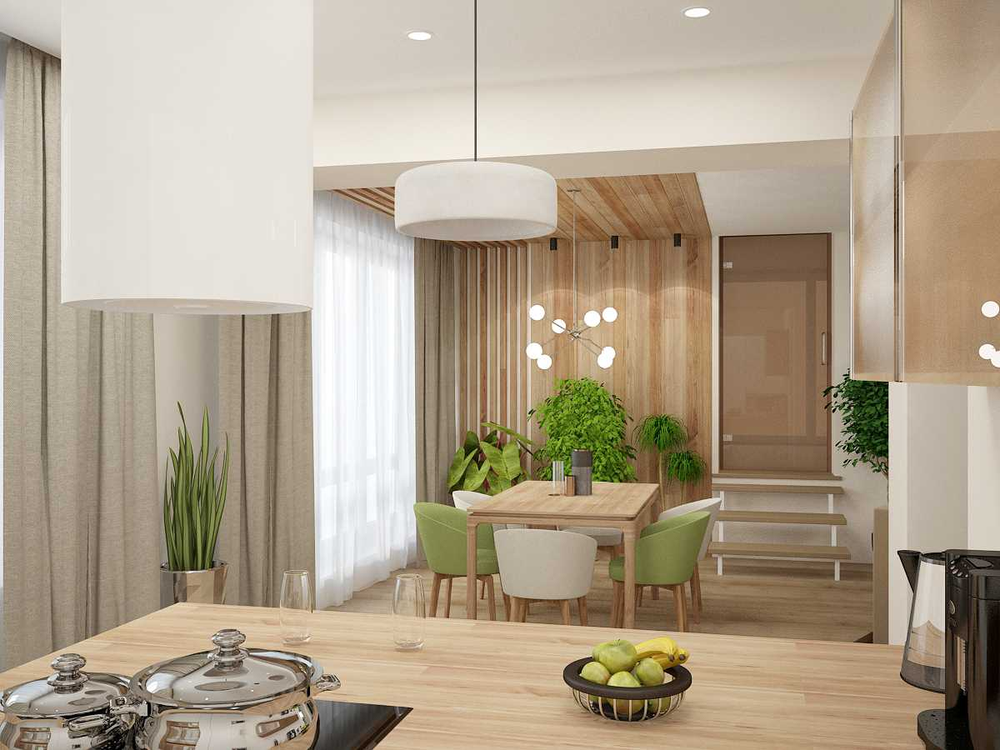

Основная цветовая гамма: Экостиль в интерьере имеет свою цветовую палитру, каждый оттенок которой имеет природное происхождения:зеленый как цвет живых растений, коричневый от темного до светлого оттенков связан с древесиной,серый напоминает природный камень, голубой — цвет неба и моря, желтый, песочный — оттенки солнца и песка, белый — нейтральный тон, символизирующий чистоту.
Краткое описание стиля: Экостиль интерьера — это уникальное дизайнерское направление, предполагающее использование натуральных материалов и фактур и создание комфортных условий на пересечении природы и современности. В данном стилевом направлении органично сочетаются природные материалы и современные цифровые устройства, а сам дизайн имеет множество точек пересечения с такими ультрасовременными тенденциями, как хай-тек и минимализм.
| № | Разновидность стилей | Фото дизайна | Краткое описание |
|---|---|---|---|
| 1 | Экостиль | Безопасные материалы в отделке и текстиле: дерево, камень, стекло, кожа, хлопок, лен | |
| 2 | Экостиль |  | Хорошее дневное освещение, которое с наступлением темноты заменяется мягким искусственным светом |